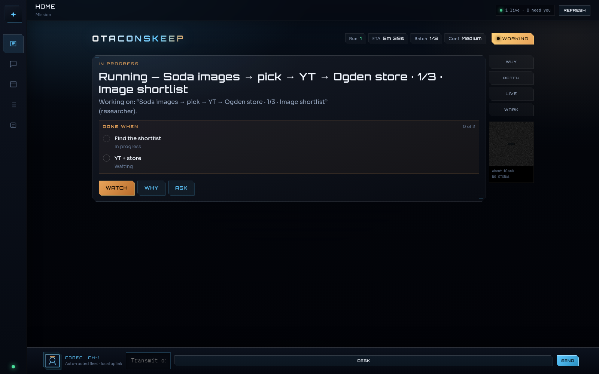
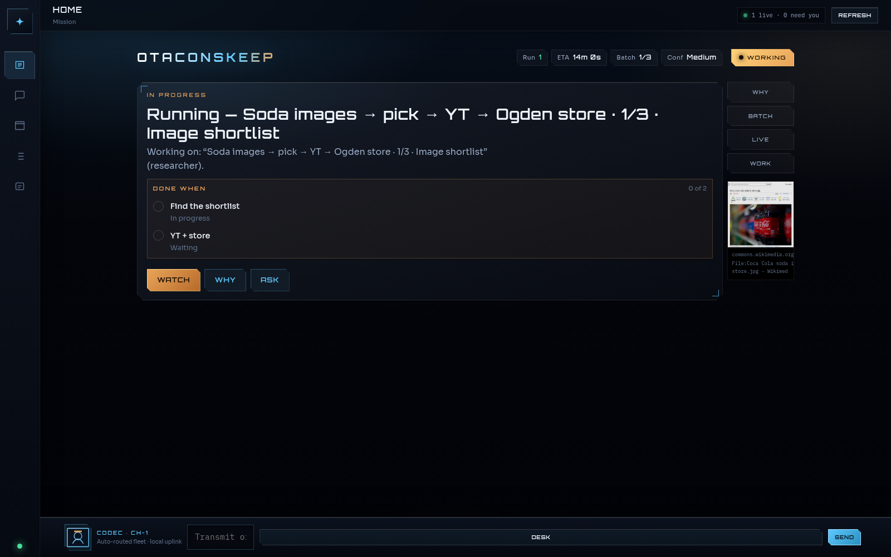
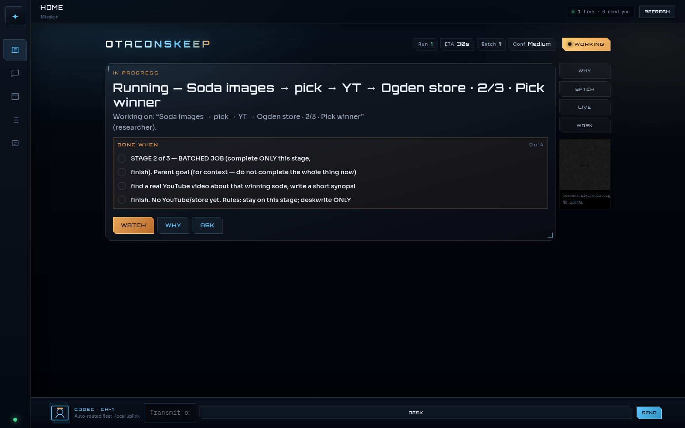
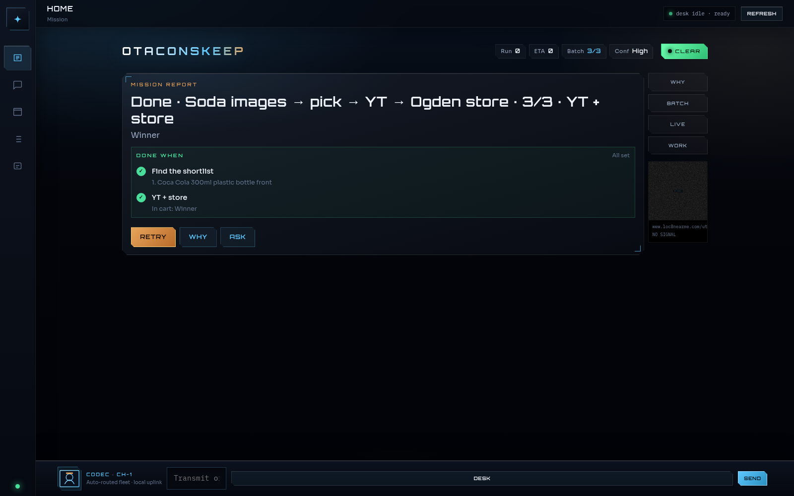
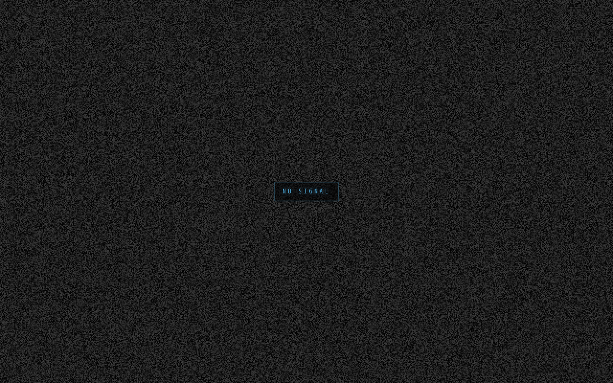

No cloud landlord
Prompts, screenshots, research MD, desk files — LAN by default. The brain is Ollama. Cloud LLM endpoints are refused.
OtaconsKeep · Multi-agent Command Deck
Named AI teammates. One always-on computer. Real browser. Real jobs. A Why dossier that refuses to celebrate the wrong cart. Grok Bot energy — on your hardware.
01 // Why it exists
Grok Bot and OpenAI Operator / Pilot-class agents proved the genre: persistent teammates that drive a computer while you walk away. They also proved the tax — your work, browsing, and files on someone else’s machine, forever, behind a subscription, with an agent loop you can’t fully autopsy when it carts coffee instead of soda.
Prompts, screenshots, research MD, desk files — LAN by default. The brain is Ollama. Cloud LLM endpoints are refused.
Command Deck UI. LIVE browser. Codec bar. Batch pipelines. Why dossiers. Mission control — not another chat bubble farm.
Hollow / Incomplete / off-brief. A soda mission cannot silently become a coffee cart victory. That alone is worth the build.
02 // Intel board
Authoritative scorer on the reference Keep — compliance_score.py · 2026-09-19.
03 // Threat comparison
Cloud wins on frontier models and zero-ops. Keep wins on sovereignty, cost ceiling, and an inspectable desk you actually own.
| Keep Desk | Grok Bot | OpenAI Pilot | |
|---|---|---|---|
| Where the computer lives | Your box / LAN | xAI cloud | OpenAI cloud |
| Brain | Your Ollama model | xAI frontier | OpenAI frontier |
| Cost | Hardware + power + supporter seat | Subscription | Subscription + usage |
| Named persistent bots | Yes | Yes | Partial |
| Browser computer-use | Yes | Yes | Yes |
| Full desktop GUI agent | No (known FAIL) | Partial | Partial |
| Local-only LLM | Enforced | No | No |
| Self-host | Yes · private repo | No | No |
| Frontier quality OOB | Your GPU model | Best | Best |
04 // Install Vault
Keep Desk ships as a private repository. Marketing, demo, and honest limits stay public. Full install instructions, compose wiring, and repo access unlock after you support the build on Buy Me a Coffee — same licensed seat system as Otaconskeep Premium.
OtaconsKeep is self-funded and built solo. A coffee funds more Command Deck work and gets you a licensed access name, password, and PIN. Put your Discord handle in the BMC note. Antonio issues seats by hand — usually same day.
Access name + password and/or PIN. Password or PIN alone is enough once the name matches.
Gate — · Premium HQ · Discord
Install dossier
Linux host recommended. GPU strongly recommended. After Antonio adds you to the private repo (or you request invite with your Discord in the BMC note), run:
# 1) Confirm you can see the private repo
# https://github.com/Otaconskeep/keep-desk
git clone https://github.com/Otaconskeep/keep-desk.git
cd keep-desk
cp .env.example .env
# 2) Point at local Ollama (cloud LLM bases are refused)
# LOCAL_OLLAMA_URL=http://host.docker.internal:11434/v1
# LOCAL_MODEL=gpt-oss:20b
ollama pull gpt-oss:20b
docker compose up -d --build
# Command Deck → http://127.0.0.1:5765/
# Browser service → http://127.0.0.1:5766/workspace/research/<pipe_id>/Deep troubleshooting, Obsidian vault mounts, upgrades, uninstall — inside the private repo after clone.
Discord · mention your access name · operator will verify License ID.
05 // Honest limits
browser_navigate first (no web_research-only theater; hollow shortlists blocked). Bot walls / SPA choke can still need retries or human takeover.06 // FAQ
Running locally has no cloud LLM bill. Install instructions and the private repo unlock after Buy Me a Coffee support + licensed seat. Demo, comparison, and limits stay public.
Pay on Buy Me a Coffee → put Discord in the note → Antonio issues access name / password / PIN → unlock this vault → request GitHub invite if needed. Premium seats unlock Keep Desk too.
No. Local Ollama only; cloud LLM endpoints are refused.
Weighted claimable score on our requirements matrix with critical gate PASS — not “91.6% of Grok.” Day-to-day feel is closer to ~75% once you count model quality, mobile, and connectors.
Earlier builds nudged web_research first, so Amazon jobs never moved the browser. Fixed: shopping/homelab stages must browser_navigate before finish; empty shortlists are rejected.
Treat purchases as dangerous. Research is in scope; production spending needs human approval and external gates.
Antonio G. Garcia — Otaconskeep.
07 // Doctrine
You are the principal. Have fun. Break things on purpose. Keep production mutations on REX. Support the build if you want the keys.
08 // Videos
YouTube Short beside the soda mission cut — both at the bottom of the page.




